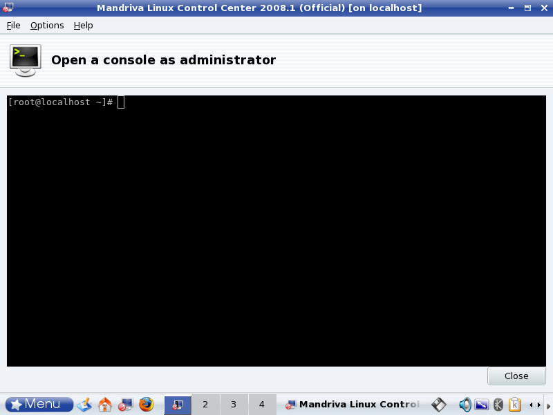

This page explains you how to introduce TOMOYO Linux 1.6.3 on Mandriva 2008.1 systems. By operating along with this page, you will be able to experience the fundamental functionalities of TOMOYO Linux and configure and operate TOMOYO Linux.
The following is the flow of introduction.
You need to install TOMOYO Linux tools. The TOMOYO Linux tools include programs for managing TOMOYO Linux's policy.
Install ccs-tools rpm package using "Install & Remove Software" (for operating from GUI) or "urpmi" (for operating from console or terminal). Using "urpmi" is recommended because you will need to execute /usr/lib/ccs/init_policy.sh from console or terminal after you installed ccs-tools rpm package.
# urpmi ccs-tools
A script is included in the tools package that performs configurations in this chapter. Run the script as follows from console or terminal.
# /usr/lib/ccs/init_policy.sh --file-only-profile
The execution of init_policy.sh may take long time (more than 10 minutes in some environment).
You have finished all preparations. Now, reboot the system.
# reboot
The default directory for storing TOMOYO Linux's configuration is /etc/ccs/ .
Since TOMOYO Linux has much functionality, you can selectively enable/disable them using "profiles". All profiles are stored in a single file /etc/ccs/profile.conf and you can switch profiles assigned to domains.
Since this page explains only MAC for files, the contents of /etc/ccs/profile.conf will contain the following entries.
0-COMMENT=-----DISABLED_MODE----- 0-MAC_FOR_FILE=disabled 0-TOMOYO_VERBOSE=disabled 1-COMMENT=-----LEARNING_MODE----- 1-MAC_FOR_FILE=learning 1-TOMOYO_VERBOSE=disabled 2-COMMENT=-----PERMISSIVE_MODE----- 2-MAC_FOF_FILE=permissive 2-TOMOYO_VERBOSE=enabled 3-COMMENT=-----ENFORCING_MODE----- 3-MAC_FOR_FILE=enforcing 3-TOMOYO_VERBOSE=enabled
The syntax of an entry of /etc/ccs/profile.conf is shown below.
$profile_number-$topic_name=$control_mode
The leading integer ($profile_number) is the name of profile, the followed word before = ($topic_name) is the name of functionalities and the trailing word after = ($control_mode) is the control mode.
The $topic_name = COMMENT is just for administrators.
The $topic_name = MAC_FOR_FILE means "MAC for file accesses".
The $topic_name = TOMOYO_VERBOSE means whether policy violation messages are printed to console or not, and prints if $control_mode = enabled and doesn't print if $control_mode = disabled.
The above example has 4 profiles (from 0 to 3), and the purpose of them are shown below.
| profile 0 | Don't apply MAC for file accesses. Don't print policy violation messages on console. |
|---|---|
| profile 1 | Apply MAC for file accesses using learning mode. Don't print policy violation messages on console. |
| profile 2 | Apply MAC for file accesses using permissive mode. Print policy violation messages on console. |
| profile 3 | Apply MAC for file accesses using enforcing mode. Print policy violation messages on console. |
The basic procedure is, generate policy using learning mode (which is defined in profile 1), confirm policy using permissive mode (which is defined in profile 2), and enforce policy using enforcing mode (which is defined in profile 3).
Programs that can update policies are listed in /etc/ccs/manager.conf . The following programs are listed.
/usr/lib/ccs/loadpolicy /usr/lib/ccs/editpolicy /usr/lib/ccs/setlevel /usr/lib/ccs/setprofile /usr/lib/ccs/ld-watch /usr/lib/ccs/ccs-queryd
/etc/ccs/exception_policy.conf contains the following 12 types of exceptions.
TOMOYO Linux has two types of logs, "access granted logs" (access requests that didn't violate domain policy) and "access rejected logs" (access requests that violated domain policy). By installing ccs-tools package, the system is automatically configured to save only "access rejected logs".
After logged into desktop desktop session, select "Menu" => "Tools" => "System Tools" => "Configure Your Computer" menu. Then, select "System" => "Open a console as administrator" menu.

Start TOMOYO Linux's policy editor.
# /usr/sbin/ccs-editpolicy